Inside the Cloud: how a data center really works
The whole walkthrough as text: 13 chapters, from the outside fence to the inside of a server, and back out to the planet.
01What is a data center?
The cloud has an address
You pay ₹20 for a cup of tea with UPI. Before the speaker says “payment received”, two banks have checked, agreed and saved your payment.

Where did that happen? Not in your phone, not in the shop, but inside big buildings full of computers, maybe hundreds of kilometres away. They are data centers.
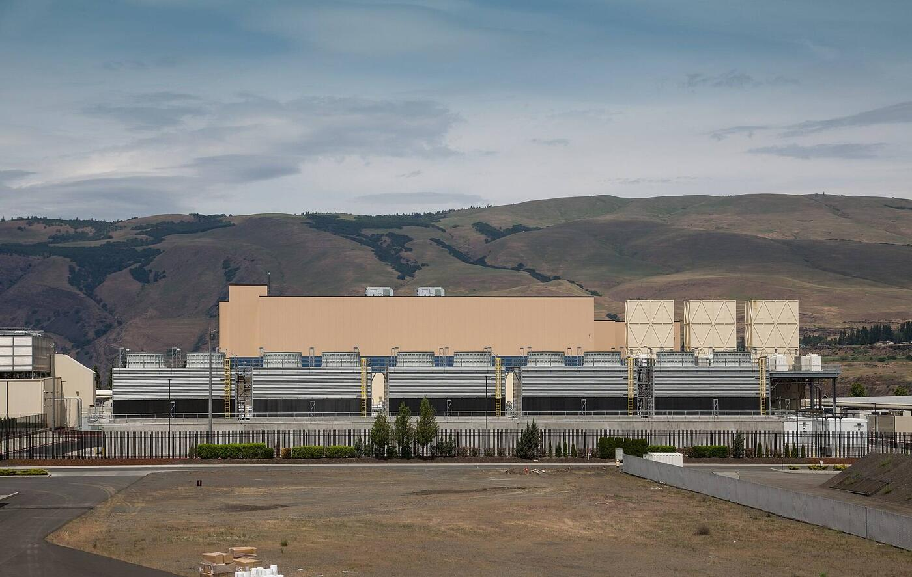
A data center is a factory for information. It runs day and night, doing three jobs with data: store, move and compute.
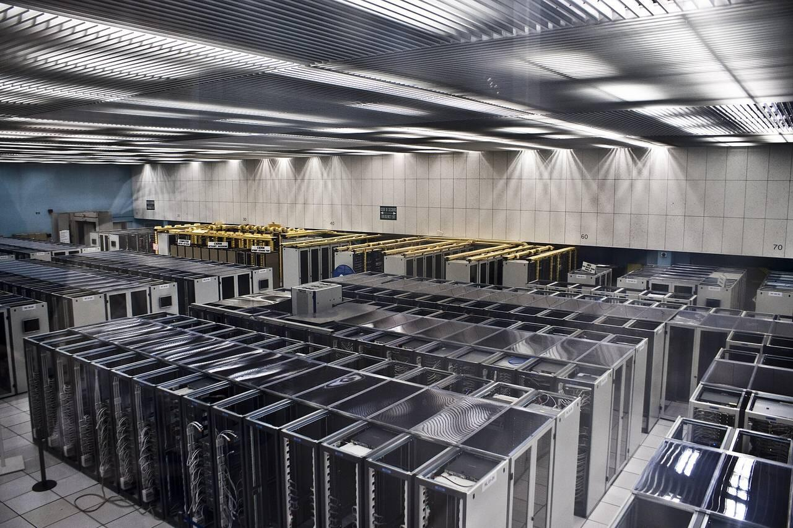
Why not just use your phone? YouTube receives far more new video every minute than any phone could hold. So we share giant, always-on computers: “the cloud”.
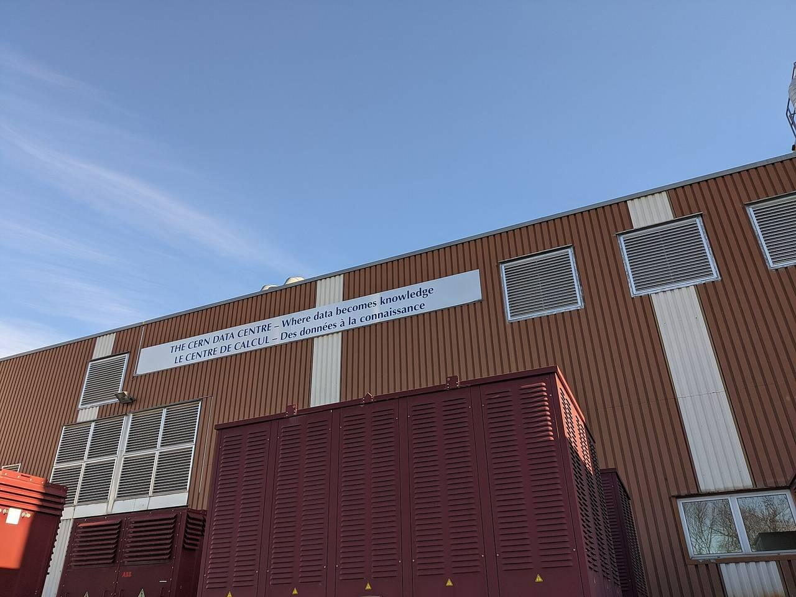
The cloud isn’t in the sky. It’s in a warehouse with very good air conditioning.

Data centers come in every size: a server closet, a company data center, a shared colocation building, and hyperscale campuses run by the biggest cloud companies.
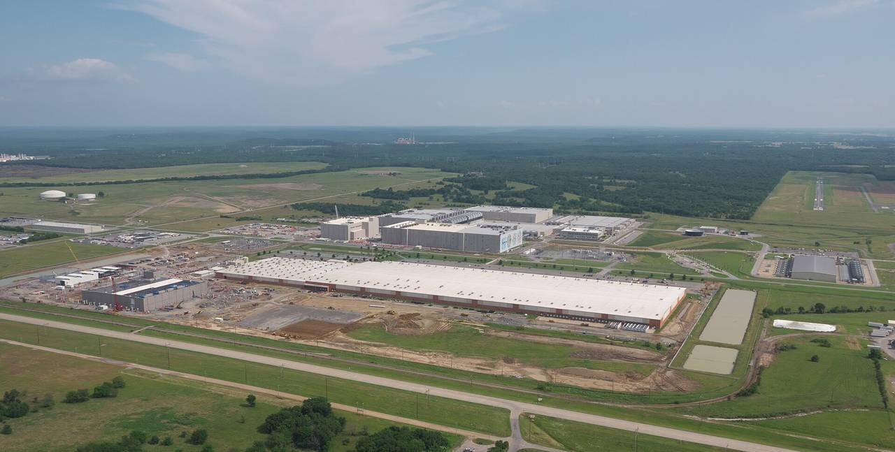
Every one of the 21.63 billion UPI payments made in December 2025 ran through data centers like this.

21.63 billion: UPI payments in one month (Dec 2025) [8]
ENIAC, one of the first big computers (1945), filled a room of about 167 m² and used around 150 kW. A phone today is millions of times faster. A data center is a building full of today’s computers.
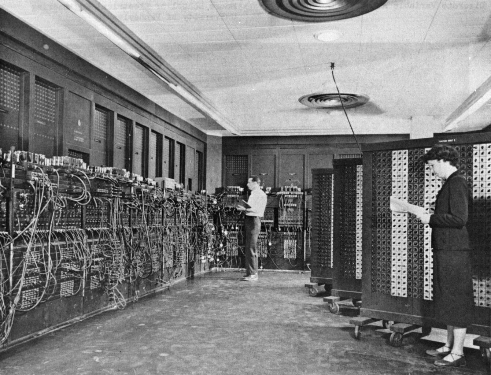
- A data center is a building full of servers that store, move and compute data.
- We share them because no phone could do the work alone; “the cloud” is computers in someone else’s data center.
- They come in every size, from a cupboard to a hyperscale campus.
02The guided tour
A football field of humming boxes
Step inside. The hall is bigger than a football field: loud, bright, chilly, and almost empty of people.

Most of the building isn’t for computers. It’s for what computers need: power, cooling, network and security.
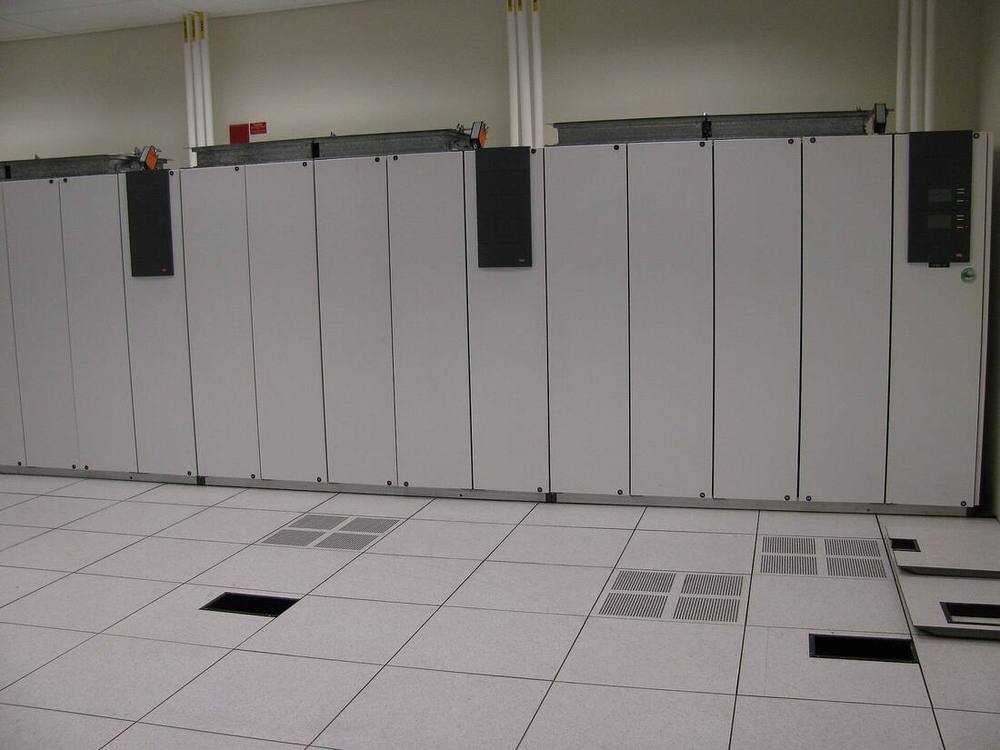
Servers slide into racks: steel cabinets about 2 m tall and 60 cm wide. Height is counted in rack units: 1U is 4.45 cm, and a standard rack has 42.

Data lives on different kinds of storage, each a trade-off between speed and cost: RAM is your desk, an SSD a filing cabinet that opens instantly, a hard disk a big warehouse, and tape a deep archive.
One LTO-10 tape cartridge holds up to 40 TB and can sit safely for decades.
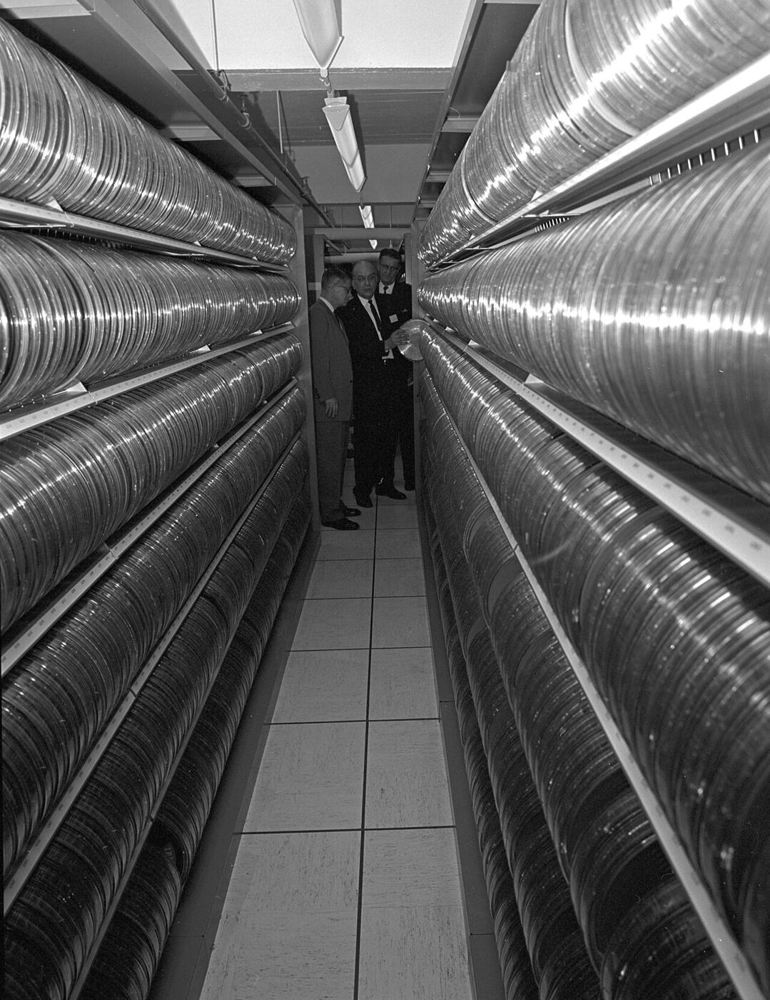
40 TB: on one LTO-10 tape cartridge [13]
Never just one copy. Drives fail every day, so data is kept on several drives (RAID), several servers and often another building. A broken drive is swapped, and the copies quietly rebuild.
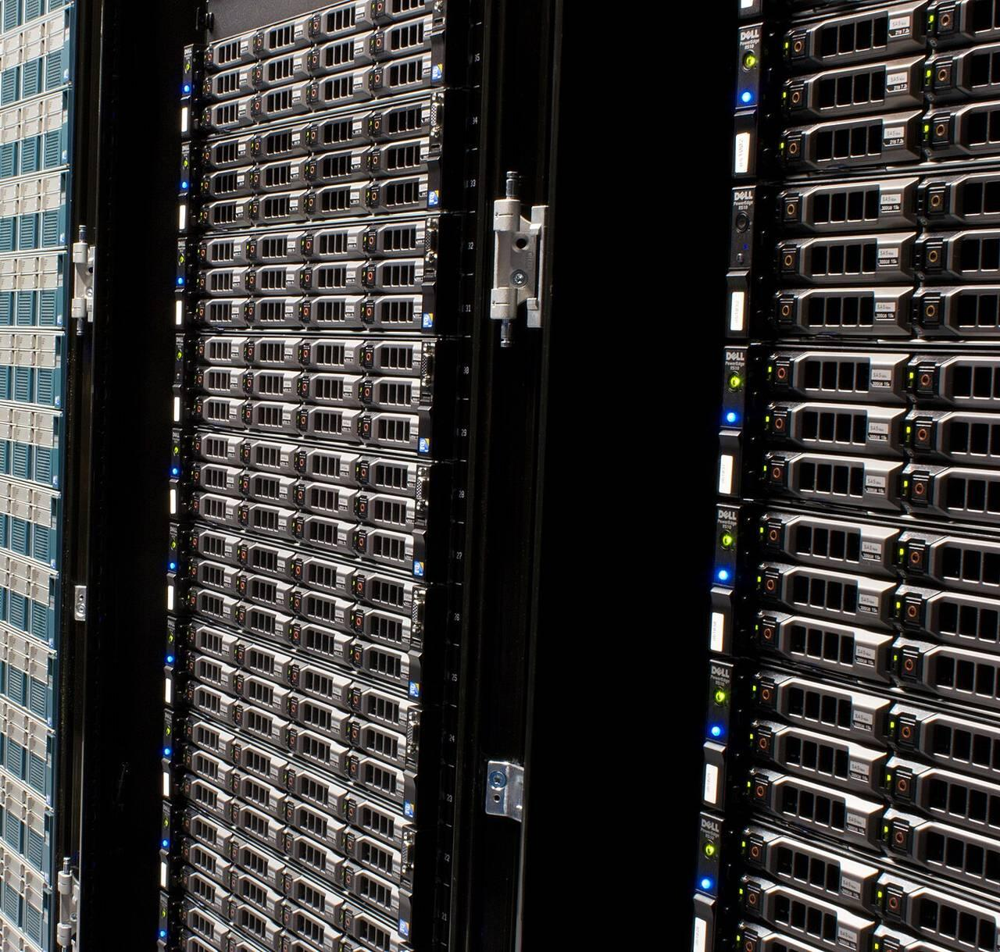
Every rack has a switch, a small post office. Big sites use spine and leaf: every leaf connects to every spine, so any server is a few hops away, and one spine can fail safely.
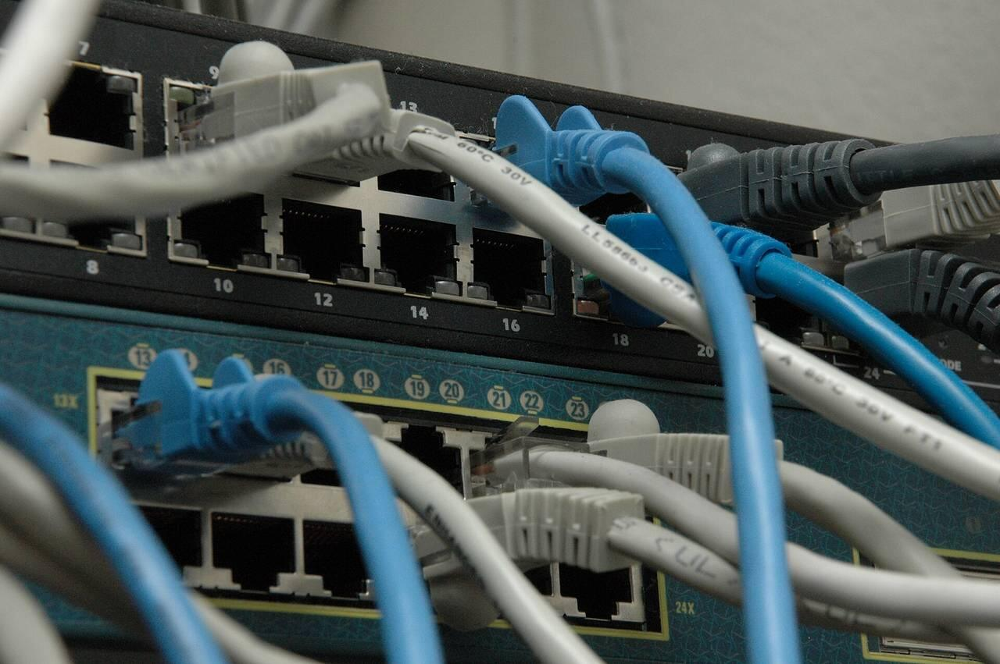
Most traffic never leaves the building: servers talk to each other far more than to you. Cisco once estimated about 70% stays inside. Engineers call it “east-west” traffic.

~70%: of data center traffic stays inside (Cisco estimate)
- Most of the floor space supports the computers: power, cooling, network and security.
- Servers sit in 42U racks; data lives on RAM, SSDs, hard disks and tape, always with extra copies.
- Switches and fibre connect everything; spine-leaf keeps every server a few hops away.
03Meet the servers
Computers that never sleep
A server is any computer whose job is to serve: it waits for requests, like “show me this video” or “save this payment”, and answers them.
Three shapes: the rack server, a flat “pizza box” 1U or 2U thick; the blade server, thin computers sharing one chassis; and the tower, a desktop-like box for small offices.
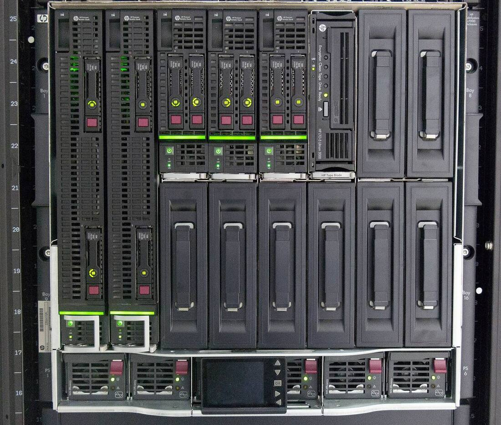
Open the lid: a CPU (the brain), RAM (the desk), drives (the filing cabinet), fans and heatsinks, two power supplies so one can fail safely, and a network card.

Servers are also named for their job: web and app servers answer and think, database servers keep records exact, storage servers are mostly drives, and AI servers do the heavy maths.
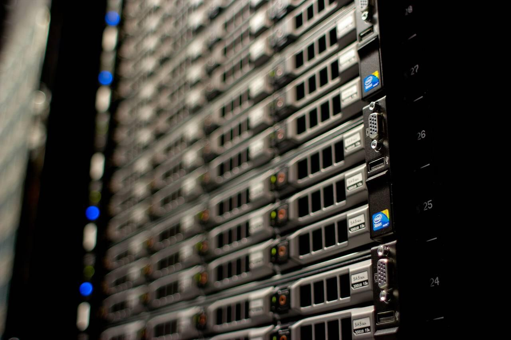
Edge servers sit close to people, at phone towers and inside internet providers. Mainframes handle huge numbers of critical transactions, like card payments, with almost no downtime.
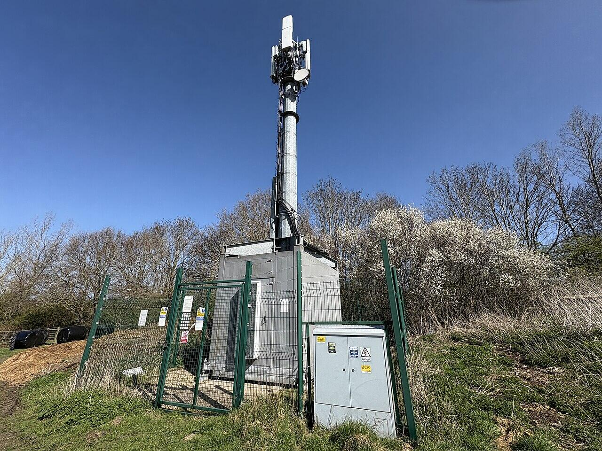
An AI server is built around 8 GPUs. NVIDIA’s DGX B300 is rated at about 14.5 kW: as much as 20 to 30 normal servers.

~14.5 kW: one 8-GPU AI server (NVIDIA DGX B300) [7]
Why GPUs? AI is mostly multiplying huge grids of numbers. A CPU is a few brilliant chefs; a GPU is a stadium crowd holding coloured cards, thousands doing tiny jobs at once.
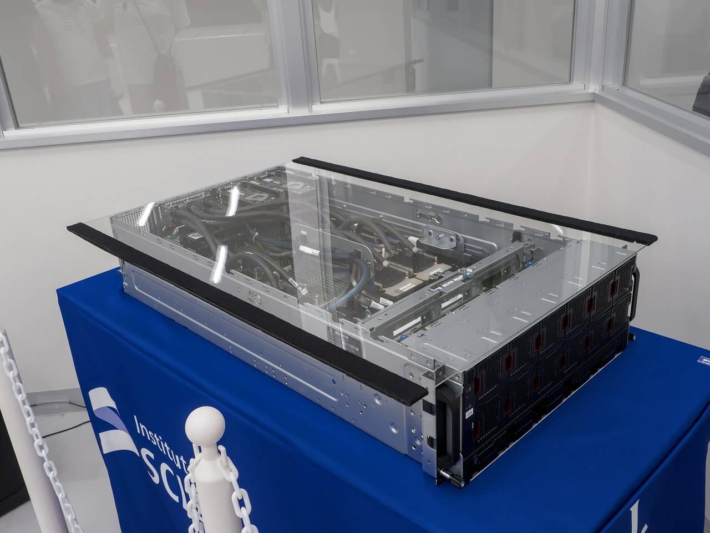
Rack-scale AI: one NVIDIA GB300 NVL72 rack links 72 GPUs, draws about 132–140 kW and is cooled by liquid flowing through every tray.

72 GPUs: in one liquid-cooled rack, ~132–140 kW [7]
- Servers come in three shapes (rack, blade, tower) and are named for their job (web/app, database, storage, AI, edge, mainframe).
- Inside: CPU, RAM, drives, fans, two power supplies and a network card.
- AI servers pack 8 GPUs and use about 14.5 kW; AI racks need liquid cooling.
04The journey of a request
0.2 seconds, a thousand kilometres
Press Enter. First, DNS, the internet’s phone book, turns a name like shop.example.com into a number address: an IP address.

Routers pass your packets hop by hop, over underground and undersea fibre, all the way to the data center’s meet-me room.

A firewall checks every packet and blocks anything suspicious. A load balancer, like traffic police, picks a server that isn’t busy.
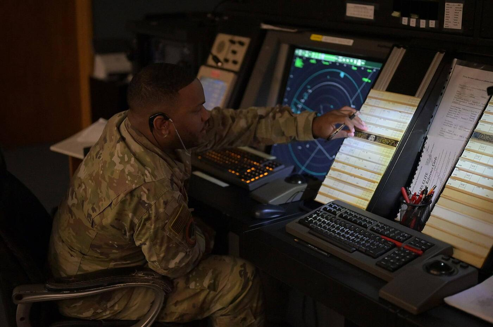
The web server works out what you need, the app server does the thinking (prices, stock, your cart), and the database hands back the stored facts.
Then the answer races back the same way. A normal page takes about a tenth of a second or two.
Light in fibre covers about 200,000 km per second. Mumbai to Singapore and back is about 8,000 km of cable: at least 40 ms for the light alone. That’s why data centers are built close to their users.
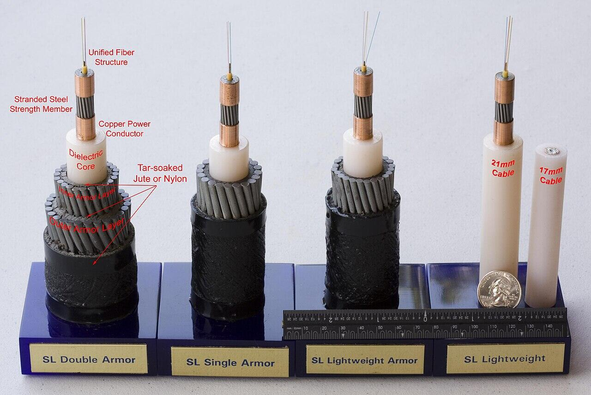
≥ 40 ms: Mumbai ↔ Singapore round trip, light alone [15]
A website looks things up. A chatbot works things out: its answer doesn’t exist until a model writes it, one token at a time on GPU servers, streamed to you as it’s made.
Google measured a median Gemini text question at about 0.24 Wh of energy and 0.26 ml of cooling water: roughly five drops.
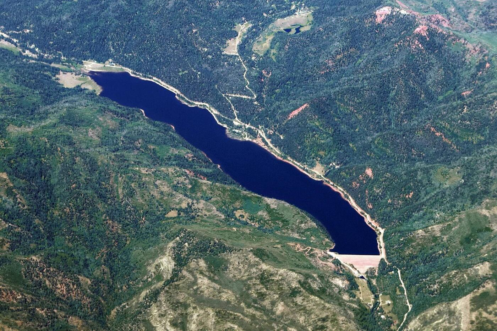
0.24 Wh · 0.26 ml: median Gemini text prompt (Google, Aug 2025) [4]
- DNS finds the address; routers carry packets across the internet.
- Inside: firewall → load balancer → web → app → database, and back.
- AI answers are generated token by token on GPUs and streamed as they are made.
05Power
Never, ever switch off
A data center’s power has one rule: the servers must never notice when anything goes wrong. So power arrives by more than one road, with a backup for the backup.
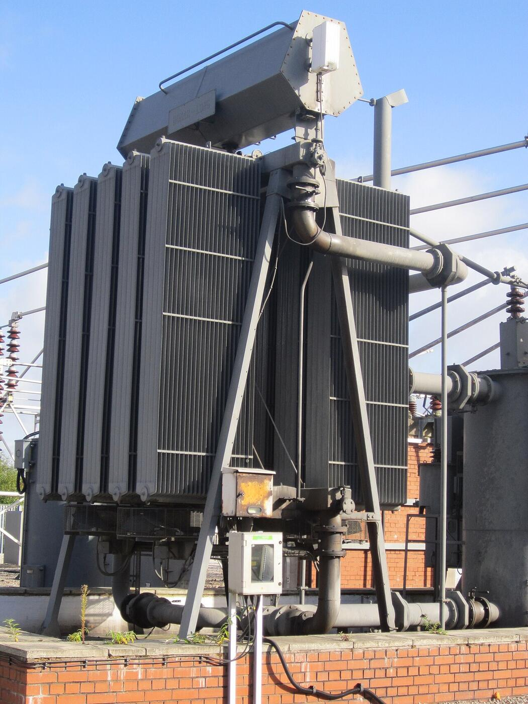
Electricity steps down on its way in: grid → substation → transformer → switchgear → UPS → PDU → the power strip in each rack → each server’s power supply.
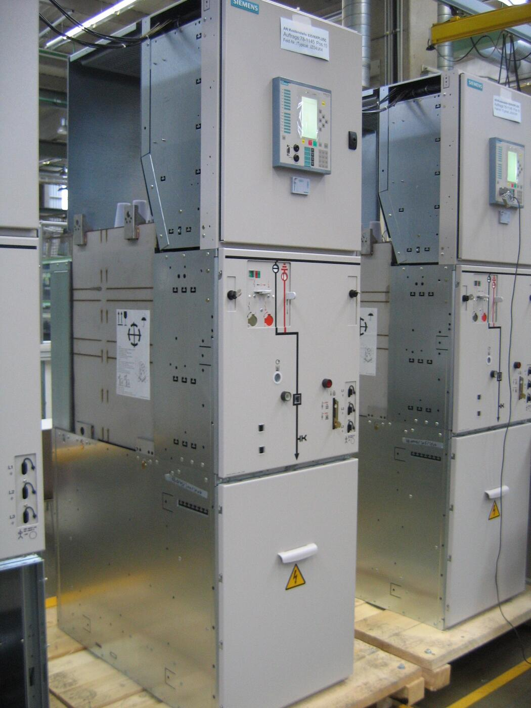
Every server has two power supplies: one on path A, one on path B, each with its own switchgear, UPS and PDUs. Either path can carry the full load. This is called 2N.
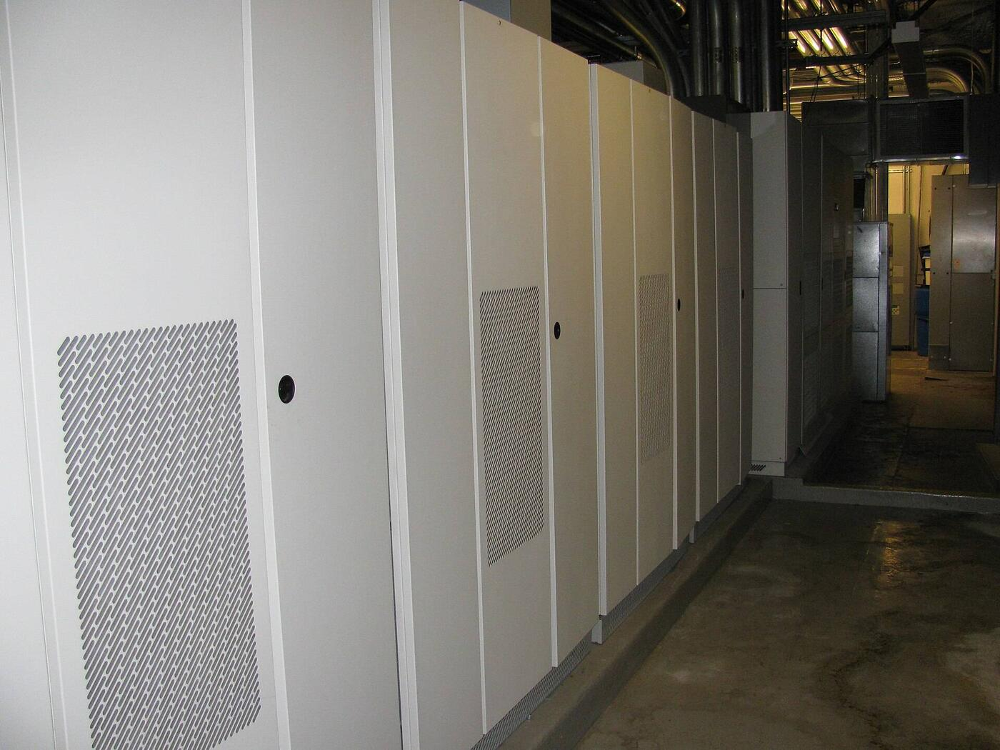
The UPS keeps its batteries permanently connected, so a grid failure causes no gap at all. Batteries are only a bridge: usually 5 to 10 minutes at full load.
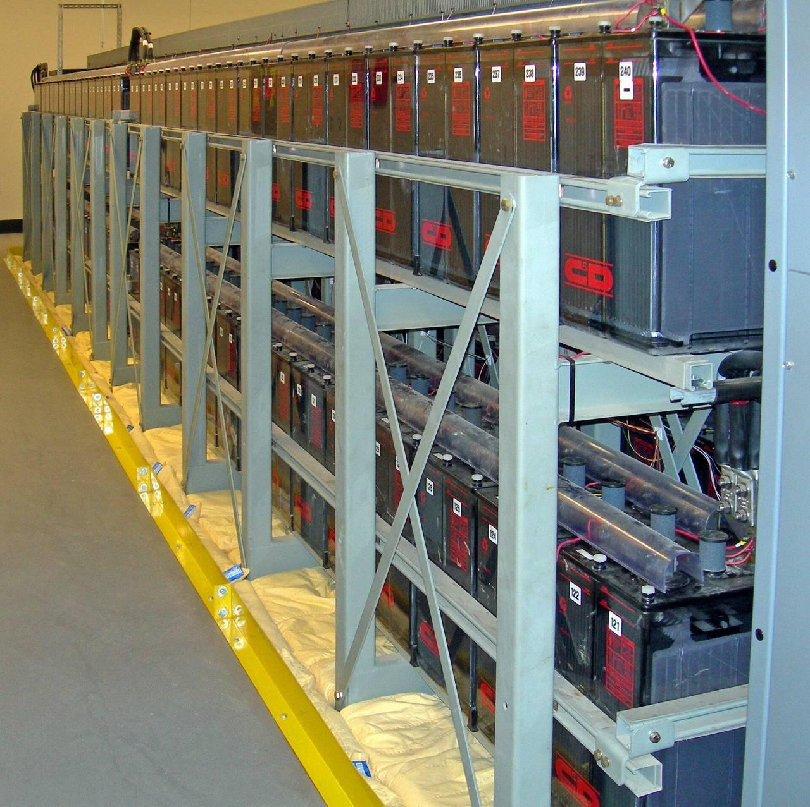
Now watch a power cut. The grid fails, and in the same instant the UPS batteries carry every server.
About 10 seconds later the diesel generators have started and settled, and the automatic transfer switch moves the load onto them.
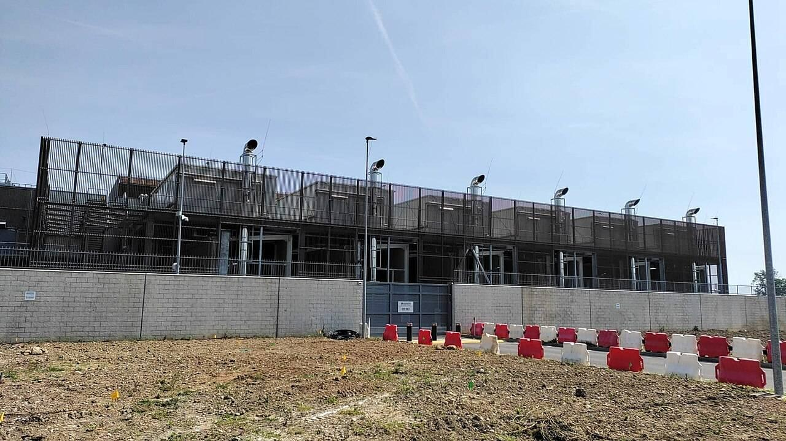
Generators can run for hours: the Uptime Institute’s design standard asks for at least 12 hours of fuel on site. When the grid returns, the load moves back.
12 h: minimum fuel on site (Uptime Institute Tier Standard) [10]
Power is the No. 1 cause of big outages: 54% of operators said their most recent serious outage was caused by a power problem.
54%: of serious outages were power problems (Uptime Institute 2025) [2]
A large AI campus can need hundreds of megawatts, as much as a city. Getting a big enough grid connection is often the slowest part of building one.
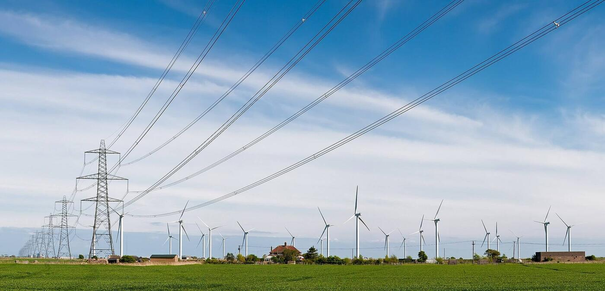
- Power steps down from the grid through substation, transformer, switchgear, UPS and PDUs to each server.
- Two independent paths, A and B, feed every server.
- The UPS bridges the gap instantly; generators start in about 10 seconds and can run for many hours.
06Cooling
A room full of hair-dryers
Almost every watt a server uses turns into heat. The industry’s ASHRAE guidelines recommend inlet air of about 18–27 °C: chilly for a person, comfy for a computer.
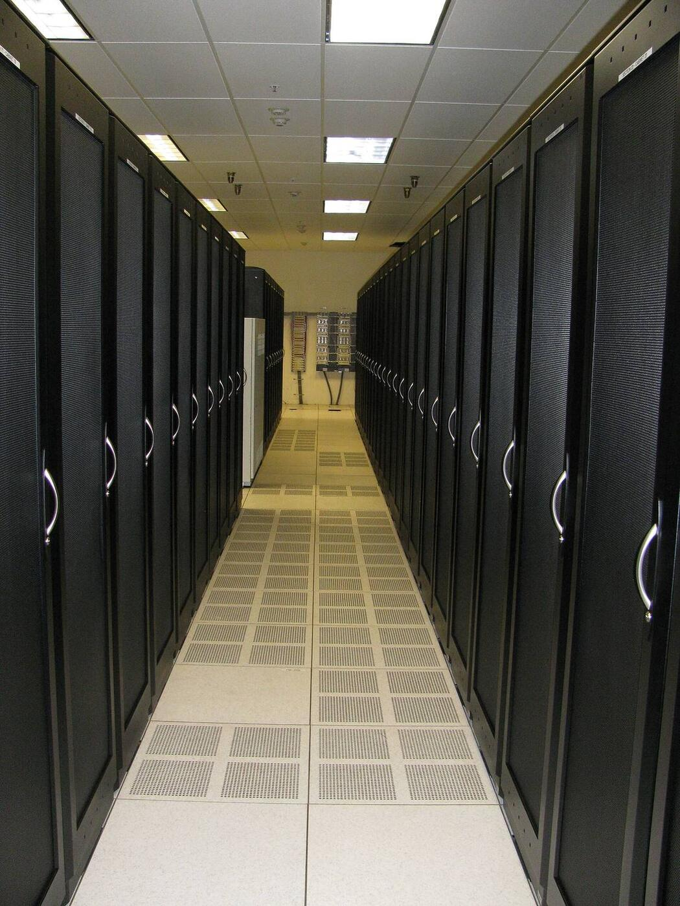
18–27 °C: recommended server inlet air (ASHRAE) [11]
Racks face front to front and back to back. The fronts share a cold aisle; the backs share a hot aisle. Containment adds doors and a roof so hot and cold air never mix.
In many halls the floor is raised about half a metre. Cooling units (CRAHs) push cold air underneath, and it rises through perforated tiles in the cold aisle.
The CRAHs pass the hot air over coils of cold water. A chiller takes the heat out of the water, and cooling towers release it into the outside air.
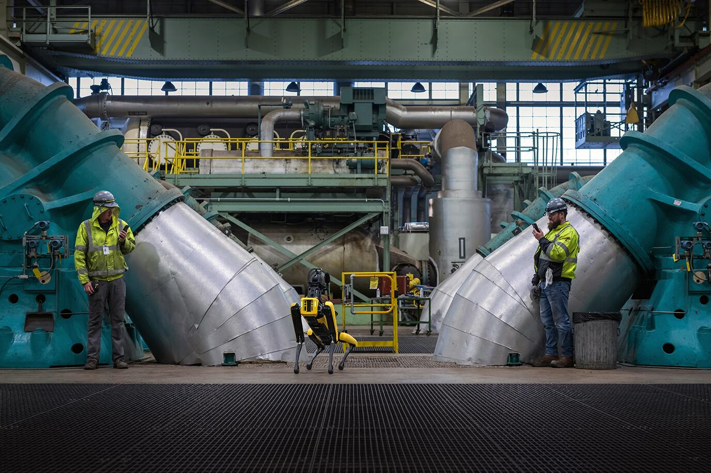
Cooling towers evaporate a little water to carry away a lot of heat: about 0.63 kWh for every litre. That water is gone into the sky.
0.63 kWh: of heat carried away per litre evaporated [15]
Water efficiency is measured as WUE: litres per kWh of IT energy. Meta ≈ 0.18 (2023), Microsoft 0.30 (FY24), US average 0.36 (2023). Lower is better.
0.18 · 0.30 · 0.36: L/kWh: Meta · Microsoft · US average [6]
Water carries about 3,500 times more heat than the same volume of air. So AI racks put cold plates on every chip, or sink servers into tanks of fluid, with the same coolant going round in a closed loop.

~3,500×: heat carried by water vs the same volume of air [15]
Microsoft says its 2024 zero-water design, a closed liquid loop with no evaporation, saves over 125 million litres a year per site. The first pilots are due in 2026.
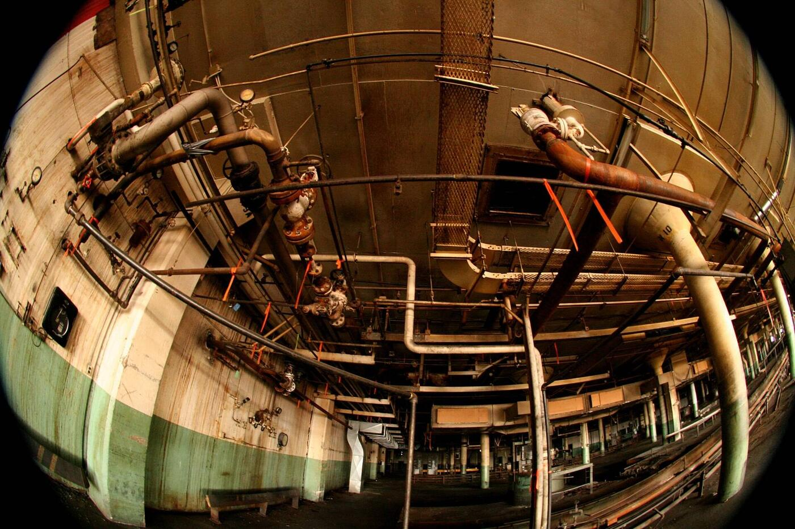
125 million L: of water saved per site each year (Microsoft) [5]
- Nearly all the power a server uses becomes heat.
- Hot and cold aisles keep air apart; heat moves from servers → CRAH → chilled water → chiller → cooling tower.
- Cooling towers evaporate water; closed loops and dry coolers save water but can cost energy. AI racks need liquid.
07Security, fire and monitoring
Harder to enter than an airport
Security works like an onion, layer after layer. First a fence, a guarded gate and cameras.
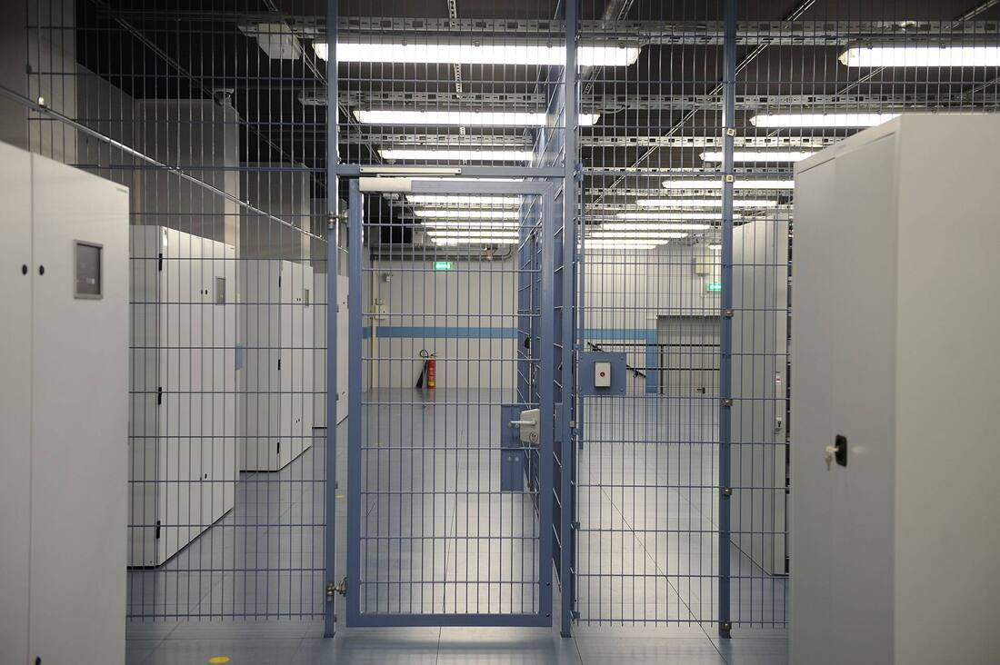
Then a mantrap that lets one person through at a time, and badges and fingerprints for every room. Even the staff need permission for each door.
In shared buildings, each customer’s racks sit inside a locked cage. Old drives are wiped, then crushed or shredded on site, so no data leaves on a forgotten disk.
Fire is fought with gas, not water. VESDA pipes sip the air nonstop and can smell smoke from an overheating cable long before anyone could see it.
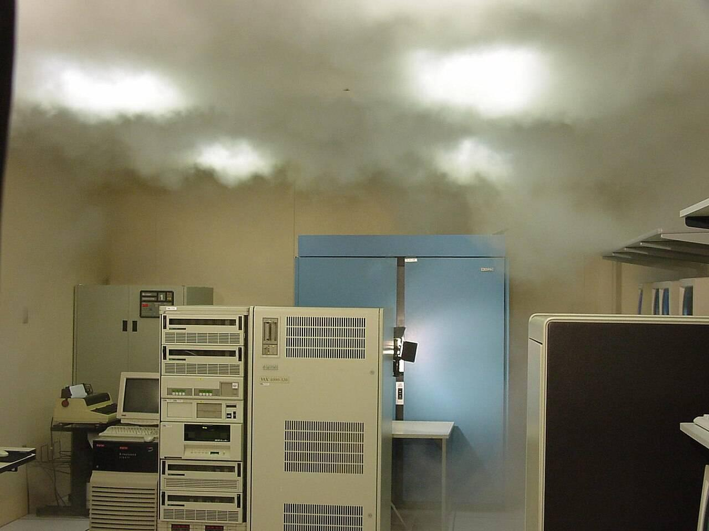
A second detector confirms. Alarms warn people out, doors close, and clean-agent gas floods the room in about 10 seconds. The fire goes out with no mess.
~10 s: clean-agent gas discharge (NFPA 2001) [12]
Thousands of sensors report every few seconds: temperatures, power, leaks, every door. It flows into DCIM software and the screens of the NOC, watched 24 hours a day.

- Security is layered: fence, guards, mantraps, biometrics, cages.
- Old drives are wiped and destroyed on site.
- Fires are detected early and put out with gas; a 24/7 control room watches thousands of sensors.
08Redundancy, uptime and tiers
A spare for everything
99.9% sounds perfect, but it still allows almost 9 hours of downtime a year. Everything breaks eventually, so data centers make sure a spare is already there.
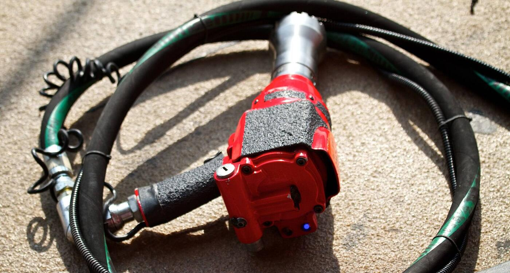
99.9%: ≈ 9 hours of downtime a year
N: exactly what you need. The hall needs 4 cooling units and has 4. If one fails, the hall runs short.
N+1: one spare. Any one unit can fail, or be taken out for service, and everything stays cool.
2N: a full second copy, sides A and B, each able to carry everything. 2N+1 adds a spare on top, for places where failure is not an option.
Uptime is counted in nines. 99.9% allows about 8.8 hours of downtime a year, 99.99% about 53 minutes, and 99.999% about 5 minutes. Each extra nine cuts it by ten.
The Uptime Institute rates designs Tier I to IV: basic (≈ 28.8 h down a year), spare parts (≈ 22 h), fix-it-while-running (≈ 1.6 h) and fault tolerant (≈ 26 minutes).
The biggest single point of failure is often the whole building. So banks and clouds run a second site far away, ready to take over after a flood, a fire or a city-wide blackout.
- Redundancy means a spare is ready before anything fails: N, N+1, 2N, 2N+1.
- Each extra “nine” of uptime cuts yearly downtime by ten.
- Tier I–IV rate designs, from basic to fully fault-tolerant; critical services also run in a second site.
09Virtualization and the cloud
One machine, many tenants
Years ago, companies ran one app per server. A 2014 NRDC study found typical company servers busy only 12–18% of the time: like driving a bus with two passengers.
12–18%: typical company server utilization (NRDC 2014) [9]
A hypervisor splits one physical server into many virtual machines. Each thinks it’s a whole computer: like turning a big house into flats.
Containers are lighter: lunchboxes that share one operating system and start in seconds. Kubernetes is the dispatcher that places them and restarts any that crash.
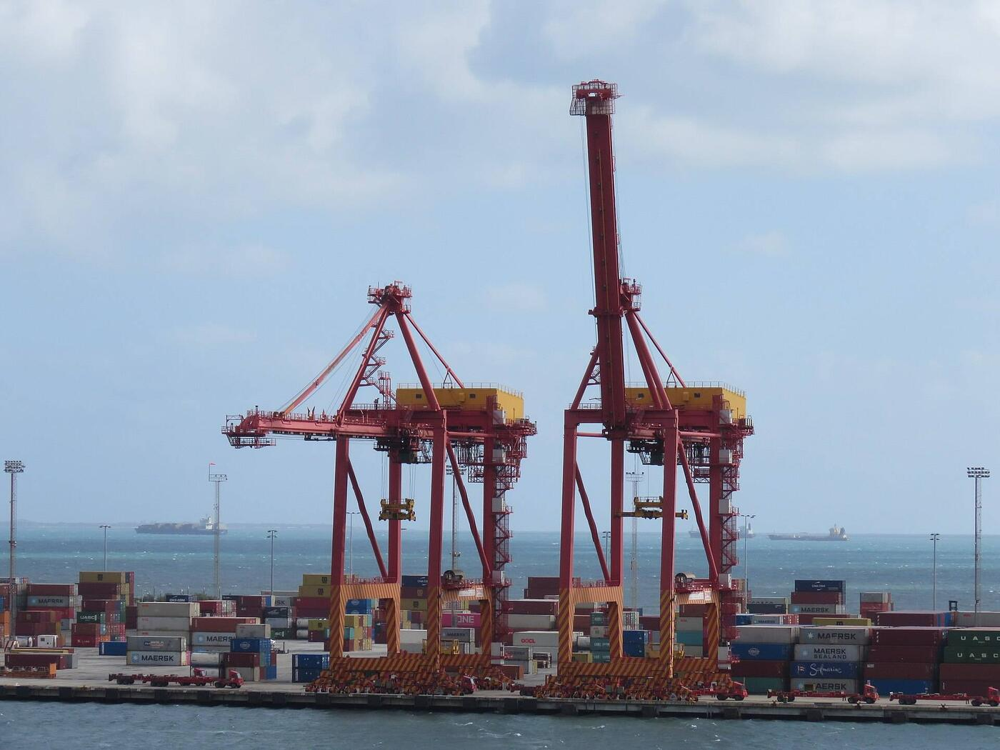
Rent those slices over the internet, by the minute, and you have the cloud. Cloud servers were typically busy about 65% of the time.
~65%: typical cloud server utilization (NRDC 2014, cited by AWS) [9]
Clouds group data centers into regions, each with several availability zones: separate buildings with their own power, cooling and network, tens of kilometres apart.
- A hypervisor slices one server into many virtual machines; containers are lighter boxes sharing one operating system.
- The cloud rents these slices by the minute.
- Regions and availability zones keep apps close to users and safe from local failures.
10Real life, traced
Follow what you do through the building
Every “cloud” thing you do is a short trip through a real building, and every trip costs a little electricity and a little water. Here are four of them.
Streaming video leans on edge caches near you, which send most of the bytes, and on huge storage halls holding the video library.

A UPI payment leans on databases, logs and redundancy: banks, NPCI and backup sites all running 24/7.
A chatbot, or a Claude Code session, does its thinking on racks of AI chips, round trip after round trip, while the coding tools run on your laptop.
A Spark job on Databricks starts virtual machines, reads object storage, and shuffles data across the network between its workers.
Anthropic has said it runs Claude on several kinds of AI chips across more than one cloud: AWS Trainium, Google TPUs and NVIDIA GPUs.
- Every online activity is a short trip through real buildings.
- Streaming leans on edge caches, payments on databases and redundancy, AI on GPU racks, Spark on VMs, storage and the network.
- GPU-heavy activities cost the most energy and cooling water.
11Energy, water and the planet
Every watt, every drop
In 2024, data centers used about 415 TWh of electricity: around 1.5% of the world’s total.
415 TWh: data center electricity in 2024, ~1.5% of the world’s (IEA) [1]
PUE = total power ÷ power used by the IT equipment. 1.0 would be perfect. The world average is about 1.54; Google reports 1.09 across its fleet for 2024.
1.54 → 1.09: PUE: world average vs Google’s fleet [2]
Big operators sign long contracts with new wind and solar farms. Google aims to run on carbon-free energy every hour of every day by 2030.
Waste heat doesn’t have to be thrown away. In Nordic cities, heat from data centers is piped into district heating networks that warm whole neighbourhoods.
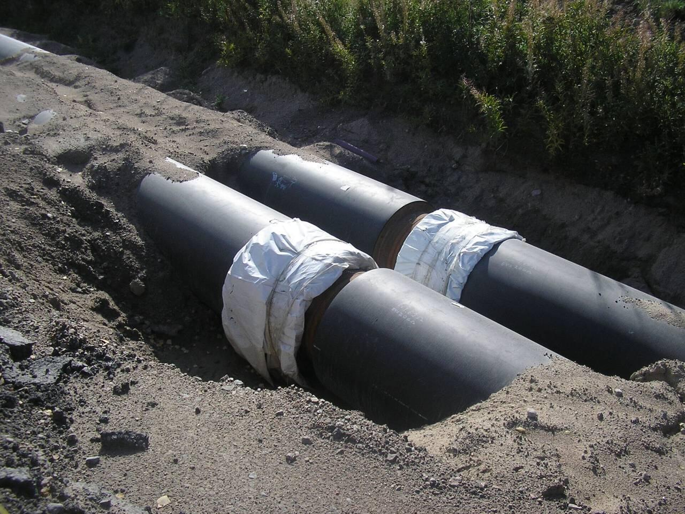
The full water footprint: water evaporated on site, water evaporated at power stations, and the ultra-pure water used to make the chips. Where a data center is built matters.
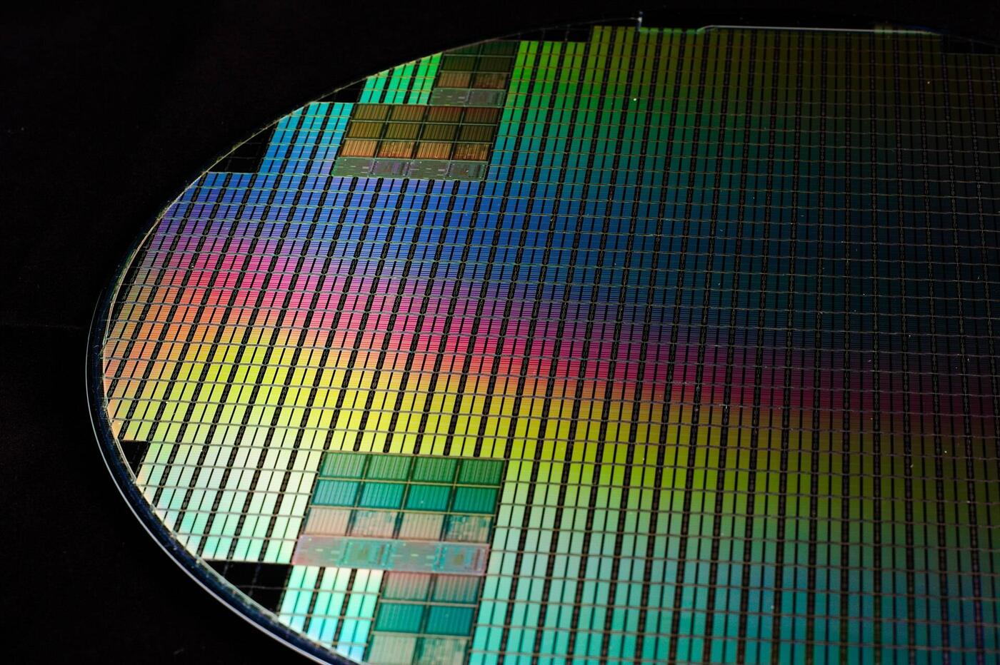
The IEA’s base case has data centers using about 945 TWh in 2030, more than double 2024. The most efficient watt is the one you never use.
~945 TWh: data center electricity in 2030 (IEA base case) [1]
- PUE = total power ÷ IT power; the average is about 1.54, the best about 1.1.
- WUE measures on-site water; power stations and chip factories add more.
- Clean power contracts, heat reuse and busier servers make data centers greener.
12Planning, building and running
Years before the first server
Where a data center goes decides almost everything else: how much it costs, how fast it is, how much water and carbon it uses, and how safe it is.
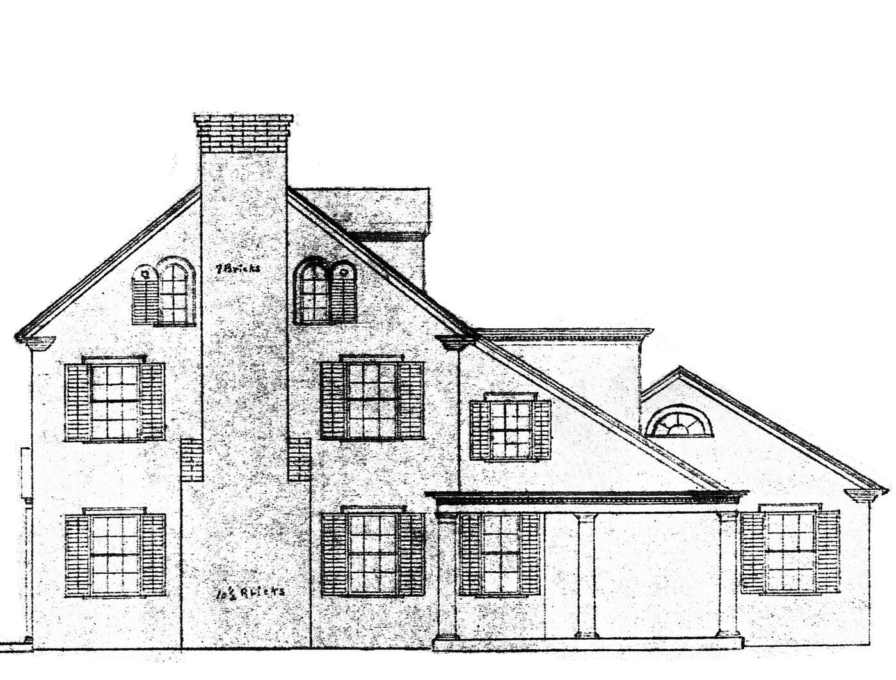
Planners check power (often a wait of years), several fibre routes, water, risks like floods and earthquakes, the climate, and distance to users: light in fibre needs about 1 ms per 100 km each way.
Then it’s built: land and power first, then design and permits, the shell, and the fit-out with transformers, UPS, generators and chillers.
Commissioning: “load banks”, boxes of heaters that pretend to be servers, run everything at full power, and engineers cut the grid to prove the backups work.
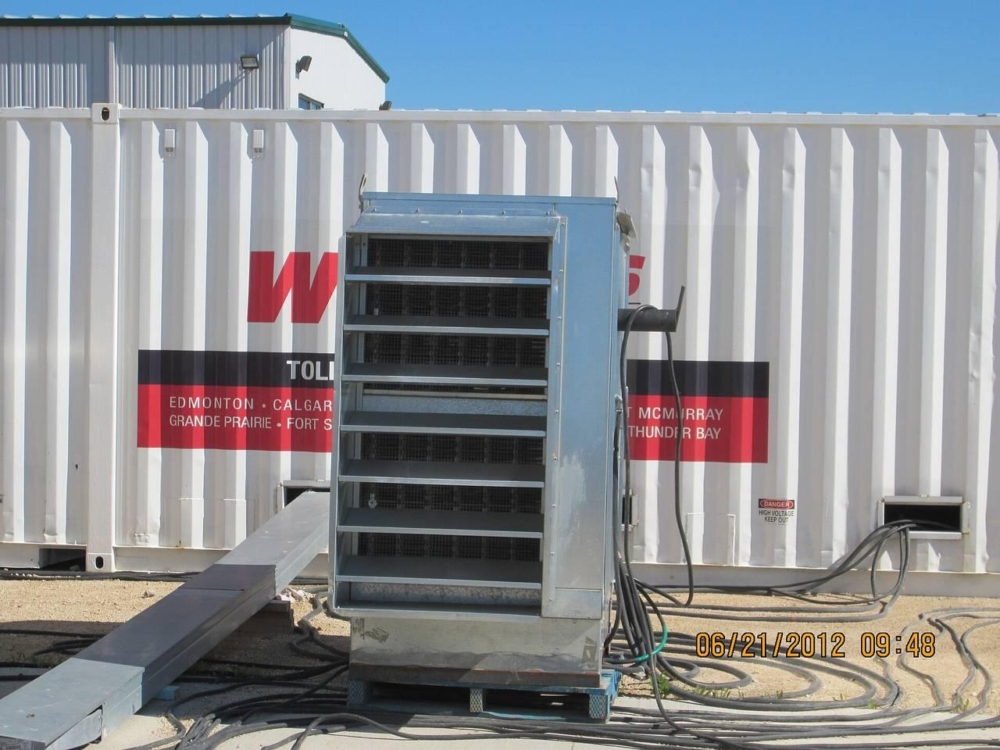
Go live: servers arrive at the loading dock, are unboxed, racked, cabled and switched on, one hall at a time.

A small team runs it 24/7: shift handovers, walk-arounds, swapping failed drives, generator tests, planned maintenance and night alarms, all on checklists, like flying a plane.

- Location is chosen for power, fibre, water, safety, climate and closeness to users.
- Everything is tested at full load, with fake servers, before going live.
- A small team runs it 24/7 with walk-arounds, procedures and the control room.
13Journey’s end
Now you’ve been inside
Next time a video starts instantly, a payment beeps or an AI answers in seconds, you’ll know the building that made it happen.
Power, cooling, network, security and spares: all so the servers never notice anything going wrong.
- You have followed a data center from the outside fence to the inside of a server, and back out to the planet.
Sources
- IEA, Energy and AI (2025): 415 TWh in 2024, ~1.5% of world electricity, ~945 TWh in 2030 (base case)
- Uptime Institute, Global Data Center Survey 2025 (average PUE ~1.54) and Annual Outage Analysis 2025 (power the top cause of serious outages, 54%)
- Google, Data center efficiency: fleet PUE 1.09 (2024)
- Google, "Measuring the environmental impact of AI inference" (Aug 2025): 0.24 Wh and 0.26 ml of water per median Gemini text prompt
- Microsoft, Measuring energy and water efficiency: WUE 0.30 L/kWh (FY24); Microsoft Cloud blog (Dec 2024): zero-water cooling design, pilots in 2026
- Lawrence Berkeley National Laboratory, 2024 United States Data Center Energy Usage Report: US average on-site WUE ≈ 0.36 L/kWh (2023); Meta-reported WUE ≈ 0.18 L/kWh (2023)
- NVIDIA DGX B300 user guide (~14.5 kW per 8-GPU system); Supermicro GB300 NVL72 datasheet (132–140 kW per rack, 72 GPUs, liquid-cooled)
- NPCI UPI product statistics: 21.63 billion transactions in December 2025
- NRDC, Data Center Efficiency Assessment (2014): server utilization 12–18% on-premises vs ~65% cloud (as cited by AWS)
- Uptime Institute Tier Standard: Topology; 12-hour minimum on-site fuel
- ASHRAE TC 9.9 thermal guidelines: 18–27 °C recommended inlet air
- NFPA 2001: clean-agent discharge within ~10 s
- LTO Program: LTO-10 cartridges, up to 40 TB native
- Anthropic and partner announcements on Claude's compute (AWS Trainium, Google TPUs, NVIDIA GPUs)
- Physics: latent heat of water (≈2.26 MJ/kg, so ~0.63 kWh of heat per litre evaporated); speed of light in fibre (~200,000 km/s); heat capacity of air and water
Photo credits
Real photos from Wikimedia Commons under the free licences shown.
- Coins: every payment is a small piece of data: Роман Рябенко, Wikimedia Commons, CC0. Resized for the web.
- A large data center campus (The Dalles, Oregon): Tony Webster from Minneapolis, Minnesota, United States, Wikimedia Commons, CC BY 2.0. Resized for the web.
- A server hall at CERN, Geneva: Florian Hirzinger - www.fh-ap.com, Wikimedia Commons, CC BY-SA 3.0. Resized for the web.
- CERN’s data centre building: Unnerving duck, Wikimedia Commons, CC BY-SA 4.0. Resized for the web.
- Cooling towers on a data center (Mesa, Arizona): Rsparks3, Wikimedia Commons, CC0. Resized for the web.
- A data center campus from the air (Mayes County, Oklahoma): Xpda, Wikimedia Commons, CC BY-SA 4.0. Resized for the web.
- Server racks at the Wikimedia Foundation: Victor Grigas, Wikimedia Commons, CC BY-SA 3.0. Resized for the web.
- ENIAC, one of the first big computers (1940s): U.S. Army (photographer unknown), Wikimedia Commons, Public domain. Resized for the web.
- A supercomputer hall (IBM Blue Gene/P, Argonne): Argonne National Laboratory, Wikimedia Commons, CC BY-SA 2.0. Resized for the web.
- Cooling units on a raised floor: Robert.Harker, Wikimedia Commons, CC BY-SA 3.0. Resized for the web.
- Racks full of servers: BalticServers.com, Wikimedia Commons, CC BY-SA 3.0. Resized for the web.
- The Library of Congress reading room: Carol M. Highsmith, Wikimedia Commons, Public domain. Resized for the web.
- A magnetic tape library, decades ago (US Department of Agriculture): U.S. Department of Agriculture, Wikimedia Commons, CC BY 2.0. Resized for the web.
- Rack servers (Wikimedia Foundation): Victor Grigas, Wikimedia Commons, CC BY-SA 3.0. Resized for the web.
- Network switches and their cables: ShakataGaNai, Wikimedia Commons, CC BY-SA 3.0. Resized for the web.
- Network cabling in a data center: Victor Grigas, Wikimedia Commons, CC BY-SA 3.0. Resized for the web.
- Rows of servers (Wikimedia Foundation): Victor Grigas, Wikimedia Commons, CC BY-SA 3.0. Resized for the web.
- A blade chassis: thin servers sharing one box: Redline, Wikimedia Commons, CC BY-SA 3.0. Resized for the web.
- Inside a 1U server, lid off: Rodzilla at English Wikipedia, Wikimedia Commons, CC BY 2.5. Resized for the web.
- Web and application servers (Wikimedia Foundation): Victor Grigas, Wikimedia Commons, CC BY-SA 3.0. Resized for the web.
- A mobile phone mast: Diacius, Wikimedia Commons, CC BY-SA 4.0. Resized for the web.
- Four GPUs inside a server node (TSUBAME 4.0): Fukumoto, Wikimedia Commons, CC BY-SA 4.0. Resized for the web.
- A supercomputer node (TSUBAME 4.0): Fukumoto, Wikimedia Commons, CC BY-SA 4.0. Resized for the web.
- A rack-scale AI system (NVIDIA GB200 NVL72): Pokiiri, Wikimedia Commons, CC BY-SA 4.0. Resized for the web.
- A library card catalogue: an index for finding things: Michael Holley Swtpc6800, Wikimedia Commons, Public domain. Resized for the web.
- Optical fibre carrying light: Hustvedt, Wikimedia Commons, CC BY-SA 3.0. Resized for the web.
- Air traffic control: directing traffic: Senior Airman John Wright, Wikimedia Commons, Public domain. Resized for the web.
- Real undersea cable samples, heavy armour to lightweight: Lonnie Hagadorn, Wikimedia Commons, CC BY-SA 4.0. Resized for the web.
- A reservoir (Lemon Reservoir, Colorado): Radomianin, Wikimedia Commons, CC BY-SA 4.0. Resized for the web.
- A substation transformer (Liverpool): Rept0n1x, Wikimedia Commons, CC BY-SA 3.0. Resized for the web.
- Medium-voltage switchgear cabinets: Zen 38, Wikimedia Commons, CC BY-SA 3.0. Resized for the web.
- A row of UPS cabinets: Robert.Harker, Wikimedia Commons, CC BY-SA 3.0. Resized for the web.
- UPS batteries in a data center: Jelson25, Wikimedia Commons, CC BY 3.0. Resized for the web.
- Generators at a nearly finished data center: Lapalmauz, Wikimedia Commons, CC BY-SA 4.0. Resized for the web.
- Wind turbines and power lines, East Sussex: Diliff, Wikimedia Commons, CC BY-SA 3.0. Resized for the web.
- A cold aisle between two rows of racks: Robert.Harker, Wikimedia Commons, CC BY-SA 3.0. Resized for the web.
- A big plant room with pumps and pipes (NASA Glenn Research Center): NASA/GRC/Jef Janis, Wikimedia Commons, Public domain. Resized for the web.
- A liquid-cooled AI chip board (Google TPU v3): Zinskauf, Wikimedia Commons, CC BY-SA 4.0. Resized for the web.
- Pipework in an industrial plant room: Eric Jusino from Denver, CO, USA, Wikimedia Commons, CC BY 2.0. Resized for the web.
- A locked customer cage: Virtuo Doc, Wikimedia Commons, CC BY-SA 4.0. Resized for the web.
- A gas fire-suppression discharge: Keith4048, Wikimedia Commons, Public domain. Resized for the web.
- Code on a screen: software watching the machines: Markus Spiske markusspiske, Wikimedia Commons, CC0. Resized for the web.
- A Formula One wheel gun: spares changed in seconds: Rich Jones from United Kingdom, Wikimedia Commons, CC BY 2.0. Resized for the web.
- Container cranes: goods packed into standard boxes: Calistemon, Wikimedia Commons, CC BY-SA 4.0. Resized for the web.
- Inside a computing rack (Ifremer’s Datarmor centre): Gregory Rocher / Ifremer, Wikimedia Commons, CC BY 4.0. Resized for the web.
- District heating pipes being laid (Jyväskylä, Finland): Antti Leppänen, Wikimedia Commons, CC BY-SA 3.0. Resized for the web.
- A silicon wafer full of chips: Enrique Jiménez, Wikimedia Commons, CC BY-SA 2.0. Resized for the web.
- A blueprint: every building starts as a plan: Alice Trythall Washburn, Wikimedia Commons, Public domain. Resized for the web.
- A load bank testing a generator: Wtshymanski, Wikimedia Commons, CC BY-SA 4.0. Resized for the web.
- A technician at work on network equipment: Bill Branson (Photographer), Wikimedia Commons, Public domain. Resized for the web.
- Pilots working through a checklist: U.S. Air Force photo/Staff Sgt. Chris Willis, Wikimedia Commons, Public domain. Resized for the web.